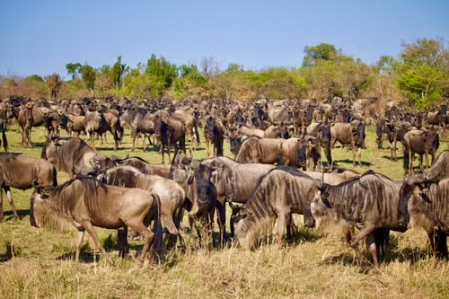
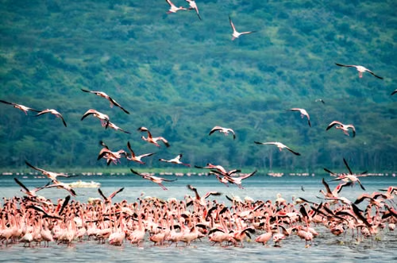
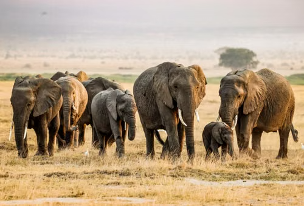
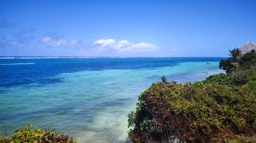
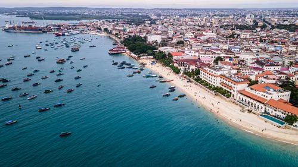
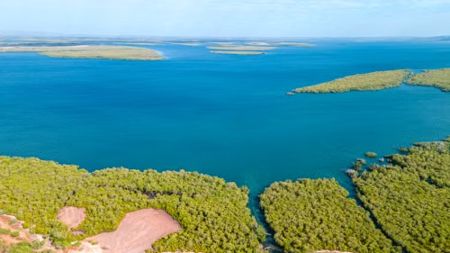

Maasai Mara

Maasai Mara is one of the Greatest wildlife cites.Best time to visit is:

Maasai Mara is one of the Greatest wildlife cites.Best time to visit is:

Lake Nakuru is known for its flamingos and diverse wildlife.Best time to visit is:

Amboseli National Park is famous for its large elephant herds and stunning views of Mount Kilimanjaro.Best time to visit:

Diani is the best beach across kenya.Best time to visit:

Mombasa has the best beaches and coastal resorts. Best time to visit:

Lamu Island is a UNESCO World Heritage site known for its Swahili architecture and serene beaches.Best time to Visit:
| Destinations | season | Best time to visit | Budget per day |
|---|---|---|---|
| Maasai Mara National Reserve | Great Migration, Big Five Safari | July to October | $200 - $500 |
| Lake Nakuru National Park | Flamingos, Birdwatching, Wildlife Viewing | June to September | $150 - $400 |
| Amboseli National Park | Elephants, Mount Kilimanjaro Views | June to October | $200 - $450 |
| Mombasa | Coast | October | $300 - $500 |
| Lamu | Heritage sites | January | $200 - $300 |
| Diani | Beach | June | $100 - $200 |